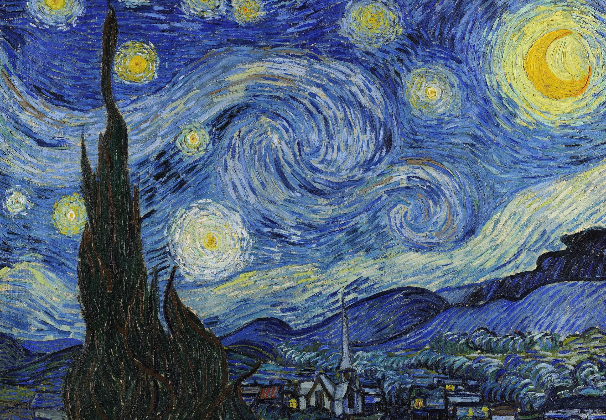

Ця широко відома картина демонструє неповторну індивідуальну манеру письма ван Гога
його особливе бачення навколишнього світу. Небо, зорі і місячний серп рухаються в єдиному екстатичному хвилеподібному ритмі.
У липні 1869 року в п'ятнадцятирічному віці Вінсент отримав місце дилера в Гаазькій філії художньо-торгової фірми Goupil & Cie завдяки своєму дядьку Вінсенту (відомому під прізвиськом «Цент»), який був одним з власників цієї компанії. Фірма виставляла та торгувала картинами XVIII та XIX столітть, а також деякими репродукціями старіших полотен
Вінсент швидко вчився оцінювати картини, хоча й писав у листі до своєї сестри Віл, що «лише десята частина полотен створюються з віри у мистецтво»
Головна сторінка